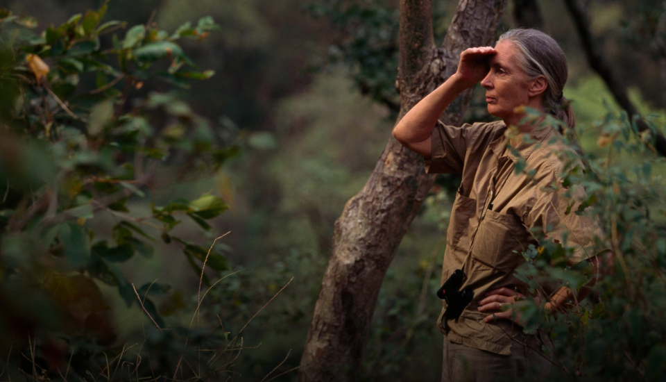
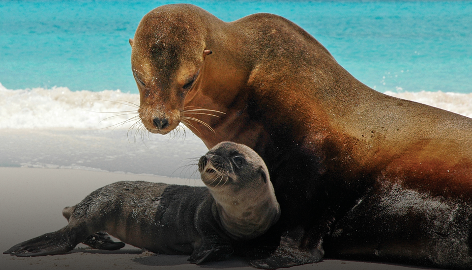
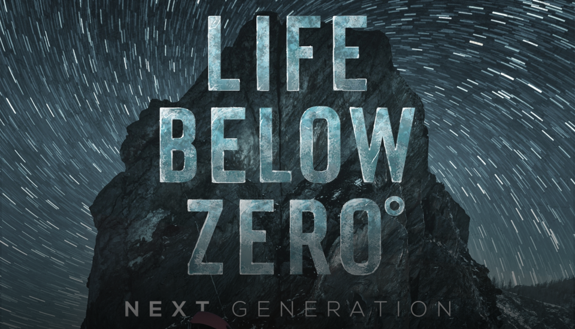
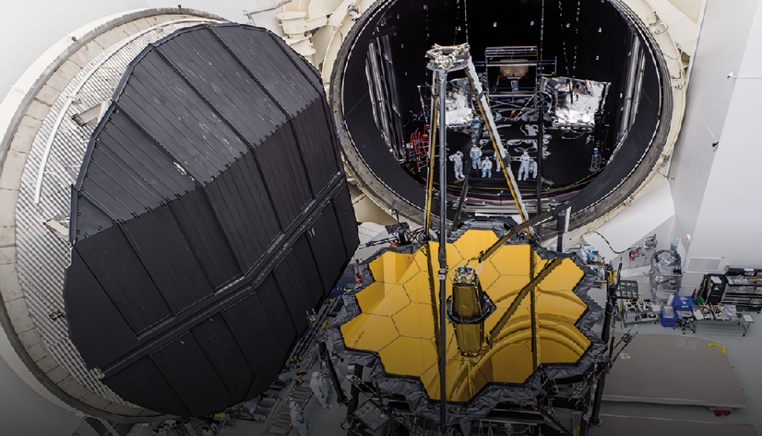
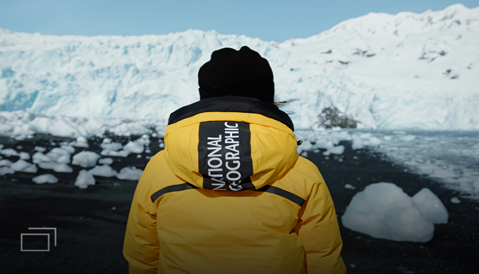

BRAND
About us
ONE STEP TO THE EDGE OF IMPOSSIBLEAND THEN, FURTHER.
불가능으로부터 우리는 한 걸음 더 나아간다.134년 동안의 이어져온 내셔널지오그래픽 탐험가들의 위대한 대장정.
-
 National Geographic Society
내셔널지오그래픽협회는 탐험과 환경 보호를 통해 지구와 인류에 공헌하고 있는 세계 최대의 비영리 단체입니다.매년 전세계의 수많은 연구와 환경 보호 프로젝트를 지원하고 있으며, 다방면의 교육 캠페인 등을 통해 미래 세대에게 영감과 비전을 심어주고 있습니다.
VIEW MORE -
 National Geographic
내셔널지오그래픽은 TV 채널, 잡지, 아동 미디어, 여행 및 탐험, 서적, 지도, 소비자 제품, 지역 기반 엔터테인먼트 및 디지털 미디어 등전 세계의 다양한 플랫폼을 통하여 세계 최고의 과학자, 사진작가, 언론인 및 제작자들의 놀라운 이야기를 전달하며 즐거움을 선사하고 있습니다.
VIEW MORE -
 National Geographic Channel
내셔널지오그래픽 채널은 1997년 개국하여 현재 전 세계 171개국 45개 언어로 방송되고 있습니다.탁월한 영상미는 물론 치밀한 과학적 분석과 엄격한 팩트 체크를 기반으로 세계 최고의 팩추얼 엔터테인먼트 프로그램을 제작, 방송해 왔습니다.
VIEW MORE -
 National Geographic Magazine
1888년 내셔널지오그래픽 협회의 지리 학술지로 창간되어현재는 세계의 지리뿐만 아니라 과학, 모험, 탐험, 자연, 인류, 문화, 역사, 고고학, 생태, 환경, 우주 등다양한 분야를 심도 있게 다루는 세계 최고의 종합 교양지로 인정받고 있습니다.
VIEW MORE -
 National Geographic Apparel
내셔널지오그래픽 어패럴은 지금 이순간에도 지구와 인류를 위한 끊임없는 모험과 탐험을 이어가고 있는 탐험가들과그들이 이뤄낸 업적을 모티브로 하고 있습니다. 의류, 여행 캐리어, 백팩, 캠핑 및 등산용품 등 700여 가지가 넘는 다양한 제품을 통해 여러분의 특별한 여정을 함께합니다.
VIEW MORE
Explore the world.
Protect the Earth.
내셔널지오그래픽은 모든 수익의 27%는 내셔널지오그래픽 협회의 과학 및 탐험 프로젝트에 지원됩니다.
TV를 시청하고, 매거진을 구독하고, 제품을 구입하는 것은 단순한 소비를 넘어 내셔널지오그래픽의
지구와 인류를 위한 여정을 함께하는 것 입니다.